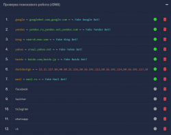
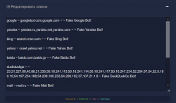
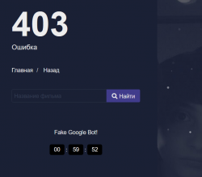
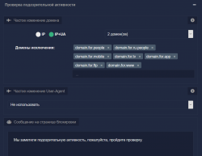
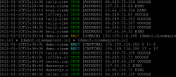
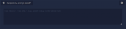

Проверка поискового робота (rDNS)
Админ-панель - Настройки веб-сайтаОтношения Вашего сайта с поисковой системой не должны быть публичными. Никто, кроме поисковой системы, больше не увидит Ваши записи в robots.txt, записи в Вашей карте сайта (sitemap) и скрытые домены, которые Вы передаёте в поиск.
По умолчанию настроена проверка на 100% подлинность таких поисковых систем как google, yandex, bing, yahoo, baidu, duckduckgo, mail.

Если Вы хотите добавить какую-то новую поисковую систему, Вы это можете сделать, отредактировав список.

Как работает проверка поискового робота (rDNS)?
На примере работы с Google:
google ~ googlebot.com,google.com ~ ~ Fake Google Bot!
Первый параметр google, это ключ в User-Agent, по которому система поймёт что сейчас зашел на сайт поисковый бот.
UA который использует поисковый бот Google, выглядит так:
Mozilla/5.0 (compatible; Googlebot/2.1; +http://www.google.com/bot.html)Т.е. можно искать например по уникальному ключу Googlebot или google.com, мы взяли просто google.
Второй параметр googlebot.com,google.com, это домены, которые прописываются в PTR записи IP адреса. В документациях всех поисковых систем, они говорят разработчикам эти адреса. На примере Google, это сказано здесь.
Третий парметр, это список IP адресов, с которых поисковый бот заходит на сайт. У Google огромное число адресов, поэтому они не дают список IP, а говорят проверять подлинность через rDNS. Однако есть бот, у которого нет таких ресурсов, это DuckDuckGo и он показал весь свой небольшой список IP адресов, по которым можно проверить подлинность.
Четвертый параметр Fake Google Bot!, это сообщение которое увидит тот пользователь, который будет маскироваться под Googlebot'а. Блокировка длится 1 час, по окончании которого будет повторная проверка этого бота.

Проверка подозрительной активности
Помимо блокировки фейковых ботов, Ваш сайт так же защищается и от ботов, которые маскируются под пользователей и сканируют Ваш сайт для своих различных целей. Данные боты могут создавать нагрузку на Ваш сервер, при этом не делая ничего полезного.
Блокировка подозрительной активности происходит двумя способами.

Первый способ, это блокировать ботов, которые уже заранее просканировали Ваш сайт, собрали URL адреса и теперь периодически заходят, чтобы собирать актуальные данные.
Ваш сайт работает на случайном поддомене/домене, поэтому каждый раз когда бот собирал ссылки, он собирал их с разных доменов. Теперь когда он будет заходить на Ваш сайт с 2-х разных доменов (настройка по умолчанию), Вы сразу определите, что это не человеческое посещение и ему нужно будет пройти проверку.
Вот пример, когда бот зашел на два разных домена, а на третий получает блокировку. Справа Вы можете видеть логи в режиме реального времени, как происходит блокировка и проверка капчи.
Вы можете сами имитировать бота, зайдя на 3 разных домена и получите проверку капчи:
Настройка IP и IP+UA говорит о том, по какому ключу отслеживать посещения ботов, только по IP или по IP + User-Agent.
Настройка доменов для исключения говорит о том, чтобы не учитывать эти домены.
Помимо доменов, можно использовать такие ключи, вместо которых автоматически подставится домен:
- Ключ
domain.for.people- это текущий домен для людей - Ключ
domain.for.bots- это текущий домен для ботов - Ключ
domain2.for.bots- это текущий второй домен для ботов - Ключ
domain.for.ru.people- это текущий домен для людей из РФ - Ключ
domain.for.ru.bots- это текущий домен в поисковой выдаче для РФ - Ключ
domain.for.app- это текущий домен Web-приложения - Ключ
domain.for.tv- это текущий домен ТВ версии - Ключ
domain.for.ftp- это текущий домен FTP - Ключ
domain.for.www- это текущий домен с www
Как отслеживать всех заблокированных ботов?

Всех ботов на которых сработал детектор, Вы можете отслеживать в терминале.
Команды, которые Вы можете использовать:
cinemapress logs bot- список всех ботовcinemapress logs bot true- список всех проверенных ботовcinemapress logs bot fake- список всех фейковых ботовcinemapress logs bot bad- список всех ботов которым показана капча
cinemapress live bot
Например их можно все перечислить в настройках админ-панели и заблокировать навсегда, если Вы уверены, что это действительно боты.
